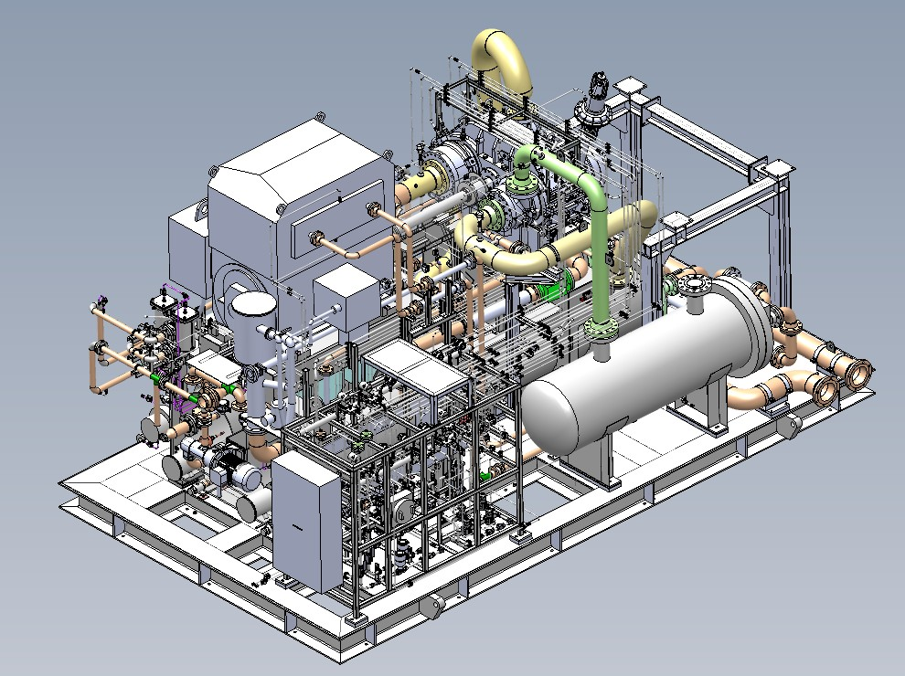
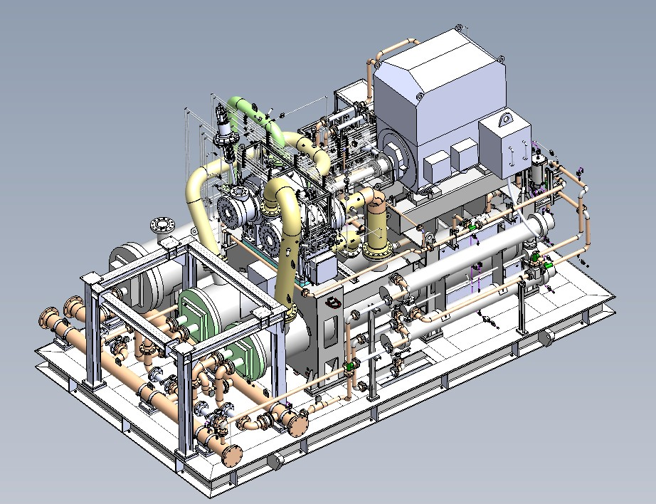
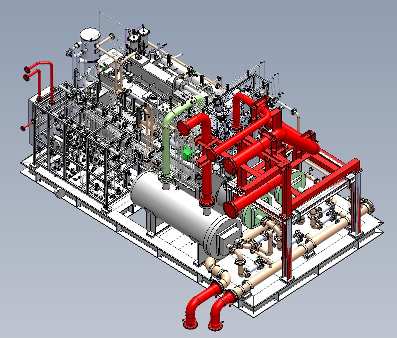

4-stage N₂ compander
3 compressor stages + 1 expander stage.
4-stage nitrogen compander package for HD KSOE Shipyard, Korea.

3 compressor stages + 1 expander stage.
Expander outlet approximately 7.9 bar(a).
3D package design, piping, systems integration, drawings and manufacturing support.



One motor drives an integral gearbox carrying three compressor stages and an expander. Lube-oil and seal-gas systems sit on the same base frame, so the whole package lifts and ships as one unit.
Simplified schematic.
Typical arrangements of the two systems I built in 3D on this package — the lube-oil system and the seal-gas system — drawn as simplified schematics.
Simplified schematics.
DESIGNED: Complete 3D assembly/model of the compressor package, including the base frame, lube-oil system, seal-gas system and package arrangement.
PERFORMED: Piping work with associated engineering calculations, lube-oil calculations and base-system stress work.
REVIEWED: 2D manufacturing drawings produced by subordinate designers and packaging/supply-chain drawings against the 3D master model.
Designed the 3D lube-oil system and associated equipment; participated in equipment selection including strainers, filters, coolers and AOP pump with senior engineers.
Created the complete 3D seal-gas system and participated in seal-gas panel planning in line with API 692 requirements.
Created the 3D base frame, foundation drawings and package tie-in/interface arrangement, including load considerations for lifting and transportation.
GA drawings, BOQ/MTO, manufacturing drawing review, customer revisions and technical support through manufacturing and FAT.
The 3D package model acted as the coordination reference for piping, equipment, drawings and manufacturing interfaces. This project strengthened my experience in integrating multiple auxiliary systems around a rotating-equipment package while maintaining a buildable overall arrangement.
← Back to projects